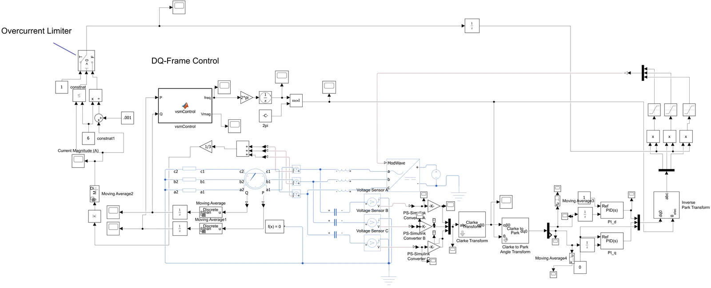

Side chapter · not part of the final machine
Side chapter: the dq frame (V8)
In V8 I tried controlling the inverter in a rotating frame, where three sine waves turn into two steady numbers. It worked in simulation. It is also a branch I left behind: the final machine, V13, does not use it.
What the dq transform does
A three-phase voltage is three sine waves, 120° apart. Controlling a sine is awkward because its value never stops changing. A controller that wants to hold something steady has nothing steady to hold.
The dq transform fixes that by changing the point of view. Imagine the three voltages as one arrow that spins at 60 Hz. Now stand on a frame that spins along with it. From there the arrow does not move. It has a fixed length and a fixed direction, so it is described by two steady numbers: d, the part along the frame's first axis, and q, the part at right angles to it. If the frame is locked to the voltage, d is the amplitude and q is zero.
It takes two steps. The Clarke transform turns the three phase values into two perpendicular components (α, β) in the fixed frame. The Park transform then rotates those by the frame angle θ:
α = (2/3)(va − vb/2 − vc/2), β = (vb − vc)/√3
vd = α·cos θ + β·sin θ, vq = −α·sin θ + β·cos θ
If the voltage is va = cos θv and so on, these work out to vd = cos(θv − θ) and vq = sin(θv − θ). They are constant whenever the frame angle follows the voltage angle. The widget below shows it. The frequency is slowed down so you can watch.
This widget needs JavaScript. With the frame locked to the voltage, d stays at 1 and q stays at 0 while the three phases keep oscillating.
What V8 built
V8 is V7 (the virtual synchronous machine) with the voltage loop replaced1. The measured phase voltages go through the Clarke and Park transforms, using an angle that I get by integrating the frequency from the VSM block. I scale the voltages by 1/12.8 first, so they sit in a range the controllers can work with1.
Two PI controllers replace the three I had before. One drives vd to a reference of 1, with P = 0.065 and I = 0.5. The other drives vq to 0, with P = 0.001 and I = 0.51. Their outputs go through the inverse Park transform, which turns two steady numbers back into three sine-shaped modulation signals for the converter, with a saturation of ±5001. The sine voltage reference block from earlier versions was deleted, because the references are now just the constants 1 and 0.

What it showed
I ran it for 2.0 s. vd settled at 1.0 and vq at 0.0, and the three output voltages were clean, symmetric sines with zero DC offset1. That matched the idea: once the controller sees steady numbers, it can hold them exactly.
There is a reason this appealed to me. A PI controller's integrator is built for steady values. Fed a sine wave directly, an integrator can drift, and later I found exactly that in my abc-frame loops: a DC offset of about 18 V hiding on one phase2. In the dq frame the integrator never sees a sine.
Why it is not in the final machine
V8 and V9 branch off V7 and stop there. The final model, V13, grows from V7 through the two-inverter model (V10) and the current-limit work (V12). Its voltage loop works in the abc frame: a proportional gain of 0.002 plus a feed-forward term of 1/200, with no integrator3. So nothing in V13's signal chain uses the Clarke or Park transforms.
The next side chapter, on the phase-locked loop, is the other branch from V7.
Sources for this page
- Manual V8, Steps 1 to 8 and validation: Clarke then Clarke-to-Park (power invariant off), angle from the VSM frequency, gains of 1/12.8, PId (P = 0.065, I = 0.5) and PIq (P = 0.001, I = 0.5), inverse Park, saturation ±500, 2.0 s run with Vd = 1.0 and Vq = 0.0. ↩
- LinkedIn post handoff, story 3, and decision log D13: an 18 V DC offset from a PI integrator acting on a sine wave. ↩
- Brief section 2 (control path, step 7) and decision log D13: voltage loop Kp = 0.002 plus feed-forward 1/200, no integrator. ↩